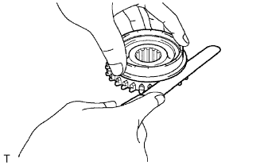
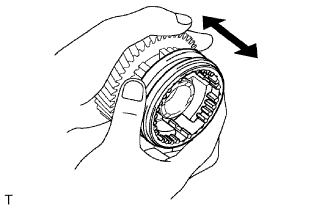

BÁNH RĂNG TRUNG GIAN VÀ BÁNH RĂNG LỒNG KHÔNG SỐ LÙI > THÁO |
| 1. KIỂM TRA KHE HỞ HƯỚNG KÍNH BÁNH RĂNG SỐ 5 TRỤC TRUNG GIAN |
Lắp bi hãm đệm chặn bánh răng số 5,đệm chặn bánh răng số 5 và bánh răng số 5 vào bánh răng trung gian.
Dùng đồng hồ so, đo khe hở hướng kính bánh răng số 5.
| 2. THÁO VÒNG BI BÁNH RĂNG TRUNG GIAN SỐ 5 |
 |
Tháo vòng bi bánh răng số 5 ra khỏi bánh răng số 5.
| 3. THÁO ỐNG TRƯỢT GÀI SỐ NO.3 |
Dùng kìm tháo phanh, tháo phanh hãm ra khỏi bánh răng số 5.
Tháo ống trượt gài số No.3, 2 khoá hãm đồng tốc No.3, lò xo khoã hãm (lò xo hồi) và lò xo hãm (lò xo C) ra khỏi bánh răng số 5.
| 4. KIỂM TRA VÀNH ĐỒNG TỐC NO.3 |
Bôi dầu bánh răng lên mặt côn của miếng then hoa bánh răng No.5. Kiểm tra hiệu quả đồng tốc của vành đồng tốc No.3. Lắp vòng đồng tốc và mặt côn của trục. Tác dụng lực ép vào vòng đồng tốc để thử quay nó theo cả hai chiều. Kiểm tra rằng vòng đồng tốc bị khoá.
Kiểm tra lại hiệu quả đồng tốc của vành đồng tốc No.3
|  |
Dùng thước lá, đo khe hở giữa lưng của vành đồng tốc No.3 và mặt côn miếng then hoa bánh răng No.5.
| 5. KIỂM TRA ỐNG TRƯỢT GÀI SỐ NO.3 |
|  |
Kiểm tra tình trạng trượt giữa ống trượt gài số No.3 và bánh răng số 5 trục trung tâm.
Kiểm tra rằng mặt đầu của bánh răng của ống trượt gài số No.3 không bi mòn.
Dùng thước cặp, đo ống trượt gài số No.3 và càng chuyển số bánh răng No.3 như được chỉ ra trên hình vẽ.
| 6. KIỂM TRA BÁNH RĂNG SỐ 5 TRỤC TRUNG GIAN |
Dùng đồng hồ đo xilanh, đo đường kính trong của bánh răng số 5.
| 7. KIỂM TRA BÁNH RĂNG TRUNG GIAN |
Dùng Panme, đo đường ngoài của mặt cổ trục.
| 8. KIỂM TRA VÒNG BI TRƯỚC BÁNH RĂNG TRUNG GIAN |
Chắc chắn rằng bánh răng phía trước quay êm.
| 9. THÁO VÒNG BI PHÍA TRƯỚC BÁNH RĂNG TRUNG GIAN |
 |
Dùng kìm tháo phanh hãm, tháo phanh hãm vòng bi phía trước bánh răng trung gian No.2 ra khỏi bánh răng trung gian.
Dùng SST, một máy ép và đầu khẩu 14 mm, tháo vòng bi phía trước bánh răng trung gian ra khỏi bánh răng trung gian.